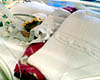
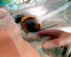
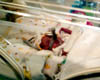
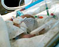
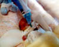
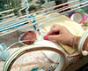

7th July 2001
Poppy is still not being given milk, to ensure that her stomach has a decent rest. She is very comfortable and her oxygen usage continues to be low.
6th July 2001
The doctors are keen to get rid of the IV tube in Poppy's arm. She will have to take anti-fungal medicine for a couple of weeks more to make sure that it has completely disappeared, but this will soon be administered to her orally. Sharon's milk will be fortified to provide all of the salts and minerals that Poppy needs and the IV tube will be taken out. Poppy continues to do well with her breathing, but her oxygen level has risen due to the amount of food she is having. Tonight her milk has been stopped because her stomach is producing too much bile. This is a result of the CPAP machine blowing air into her stomach as well as her lungs and causing it to distend. Hopefully she should be back on milk tomorrow morning.

5th July 2001
Poppy is still stable on the CPAP ventilator and is very comfortable. She is having 4ml of milk an hour now (3 and a half fluid ounces per day) and seems to be doing well on it; she has put on 3oz over the last week and now weighs over 1lb 12oz. We should be able to start giving Poppy 'Kangaroo care' soon. This means that we will hold her close to our skin, inside our clothes, to provide warmth and security. As soon as the neonatal care staff are happy that Poppy is going to remain stable, we'll be given the go ahead.

4th July 2001
Poppy has had the ventilator tube removed and has started on CPAP ventilation today. This type of ventilation only provides enough pressure to keep her lungs continually open to ease her own breaths. It is considered to be less harsh and traumatic for babies, although Poppy didn't find the nasal prongs keeping the ventilator on to be very pleasant. She remains stable at the moment, without any problems, but she may tire. We may not have seen the last of the tube, but hopefully we have! The tube for milk feeds goes into her tummy through her mouth now, and as long as she remains stable, the doctors are hoping to increase her food intake.

3rd July 2001
Poppy has been very comfortable today. The fungal infection she had has gone, but she has a bacterial infection. She has been kept on 3ml of milk today, although the ventilator has been turned down, which is good.

2nd July 2001
Poppy had a heart scan today. The cardiologist found that she has not got a re-opened valve in her heart, which is great news, but means that fluctuating oxygen saturation levels are more likely due to her immature lungs and the inflamation that she has there. Poppy's milk intake will be increased to 4ml an hour from tomorrow, which means that she is being fed mostly on milk and fairly soon she should have the IV feeding line removed. She is relaxed and comfortable.
1st July 2001
Poppy's milk intake has been increased to 3ml an hour today. Her fluid intake had also been increased yesterday, but has been decreased today, because her heart murmur was heard more distinctly during her general check up this morning. The valve that has re-opened in her heart is thought to be the problem, so the amount of fluids has been decreased to ensure that her lungs do not become waterlogged. She has needed increased ventilator help, although her requirements are still minimal. Her condition is still very stable and the nursing staff and doctors are not concerned as this is normal for a baby of her gestation.

